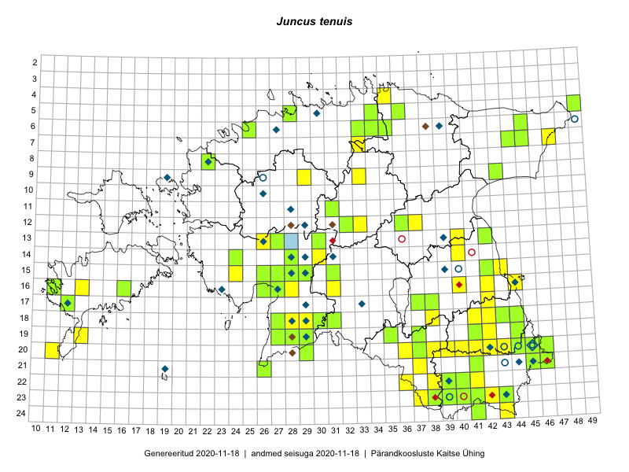

Juncus tenuis
Uuendatud: 2016-12-08
Kaardile koondatud taksonid: Juncus tenuis Willd.

Kaart põhineb 77 kirjel, neist vaatlusi 73 ja eksemplare 4. Taksonit on leitud 57 ruudust.
| Ruut | Vaatleja(d) | Vaatlusaeg | Kirje tüüp | Viide andmebaasikirjele |
|---|---|---|---|---|
| 13-26 | Toomas Kukk, Thea Kull, Timo Luhamäe, Ott Luuk, Peedu Saar | 2015-06-28 | ruut/ala | vaata PlutoFis |
| 24-43 | Ott Luuk, Peedu Saar | 2015-08-13 | ruut/ala | vaata PlutoFis |
| 05-49 | Tiit Hallikma, Toomas Kukk | 2015-07-22 | ruut/ala | vaata PlutoFis |
| 23-43 | Ott Luuk, Peedu Saar | 2015-08-12 | ruut/ala | vaata PlutoFis |
| 24-43 | Ott Luuk, Peedu Saar | 2015-08-13 | punkt | vaata PlutoFis |
| 23-43 | Ott Luuk, Peedu Saar | 2015-08-12 | punkt | vaata PlutoFis |
| 07-44 | Tiit Hallikma, Toomas Kukk | 2015-07-20 | ruut/ala | vaata PlutoFis |
| 07-45 | Ott Luuk, Hannes Pehlak | 2015-07-22 | ruut/ala | vaata PlutoFis |
| 15-24 | Ott Luuk, Elle Roosaluste, Jaak-Albert Metsoja | 2015-06-17 | punkt | vaata PlutoFis |
| 14-28 | Ott Luuk, Hannes Pehlak | 2015-06-10 | ruut/ala | vaata PlutoFis |
| 06-45 | Thea Kull, Eerik Leibak | 2015-07-20 | ruut/ala | vaata PlutoFis |
| 06-45 | Thea Kull, Eerik Leibak | 2015-07-20 | punkt | vaata PlutoFis |
| 07-47 | Thea Kull, Eerik Leibak | 2015-07-21 | ruut/ala | vaata PlutoFis |
| 07-47 | Thea Kull, Eerik Leibak | 2015-07-21 | punkt | vaata PlutoFis |
| 16-42 | Thea Kull, Eerik Leibak | 2015-07-05 | ruut/ala | vaata PlutoFis |
| 11-13 | Eeva-Maria Jeletsky, Tarmo Niitla | 2015-06-28 | ruut/ala | vaata PlutoFis |
| 22-39 | Eeva-Maria Jeletsky, Tarmo Niitla | 2015-07-25 | ruut/ala | vaata PlutoFis |
| 19-13 | Oliver Parrest | 2015-07-01 | ruut/ala | vaata PlutoFis |
| 23-38 | Eeva-Maria Jeletsky, Tarmo Niitla | 2015-07-15 | ruut/ala | vaata PlutoFis |
| 16-11 | Mari Reitalu | 2015-05-22 | ruut/ala | vaata PlutoFis |
| 19-37 | Eeva-Maria Jeletsky, Tarmo Niitla | 2015-08-10 | ruut/ala | vaata PlutoFis |
| 20-37 | Eeva-Maria Jeletsky, Tarmo Niitla | 2015-08-10 | ruut/ala | vaata PlutoFis |
| 16-11 | Mari Reitalu | 2015-06-22 | punkt | vaata PlutoFis |
| 22-40 | Eeva-Maria Jeletsky, Tarmo Niitla | 2015-08-05 | ruut/ala | vaata PlutoFis |
| 23-40 | Eeva-Maria Jeletsky, Tarmo Niitla | 2015-08-04 | ruut/ala | vaata PlutoFis |
| 23-40 | Eeva-Maria Jeletsky, Tarmo Niitla | 2015-08-05 | ruut/ala | vaata PlutoFis |
| 23-41 | Eeva-Maria Jeletsky, Tarmo Niitla | 2015-08-03 | ruut/ala | vaata PlutoFis |
| 24-41 | Eeva-Maria Jeletsky, Tarmo Niitla | 2015-08-04 | ruut/ala | vaata PlutoFis |
| 16-26 | Indrek Tammekänd | 2015-05-11 | ruut/ala | vaata PlutoFis |
| 17-42 | Kirsi Loide, Marje Loide | 2015-07-27 | ruut/ala | vaata PlutoFis |
| 18-42 | Kirsi Loide, Marje Loide | 2015-07-28 | ruut/ala | vaata PlutoFis |
| 19-42 | Kirsi Loide, Marje Loide | 2015-07-29 | ruut/ala | vaata PlutoFis |
| 18-31 | Mari Metsoja, Jaak-Albert Metsoja | 2015-06-08 | ruut/ala | vaata PlutoFis |
| 12-32 | Meeli Mesipuu, Timo Luhamäe | 2015-06-11 | ruut/ala | vaata PlutoFis |
| 12-32 | Timo Luhamäe, Meeli Mesipuu | 2015-06-11 | punkt | vaata PlutoFis |
| 13-42 | Meeli Mesipuu, Thea Kull | 2015-08-14 | ruut/ala | vaata PlutoFis |
| 19-41 | Kadi Palmik, Helle Mäemets | 2015-08-13 | ruut/ala | vaata PlutoFis |
| 22-38 | Kadi Palmik, Helle Mäemets | 2015-08-19 | ruut/ala | vaata PlutoFis |
| 20-11 | Mari Reitalu, Triin Reitalu | 2015-07-19 | ruut/ala | vaata PlutoFis |
| 20-11 | Mari Reitalu, Triin Reitalu | 2015-07-19 | punkt | vaata PlutoFis |
| 09-29 | Ott Luuk, Thea Kull | 2016-05-30 | ruut/ala | vaata PlutoFis |
| 09-29 | Thea Kull, Ott Luuk | 2016-05-25 | punkt | vaata PlutoFis |
| 20-46 | Meeli Mesipuu, Timo Luhamäe | 2016-06-14 | punkt | vaata PlutoFis |
| 19-42 | Ott Luuk, Sander Laherand | 2016-06-17 | ruut/ala | vaata PlutoFis |
| ? | Silvia Pihu, Illi Tarmu | 2015-07-10 | ruut/ala | vaata PlutoFis |
| 21-46 | Meeli Mesipuu, Timo Luhamäe | 2016-06-14 | punkt | vaata PlutoFis |
| 16-31 | Meeli Mesipuu | 2016-06-23 | punkt | vaata PlutoFis |
| 19-28 | Peedu Saar, Ott Luuk | 2016-06-09 | punkt | vaata PlutoFis |
| 19-41 | Vivika Väli, Ülo Väli | 2015-06-20 | ruut/ala | vaata PlutoFis |
| 18-43 | Vivika Väli, Ülo Väli | 2015-07-14 | ruut/ala | vaata PlutoFis |
| 20-41 | Vivika Väli, Ülo Väli | 2015-07-27 | ruut/ala | vaata PlutoFis |
| 19-42 | Sander Laherand, Ott Luuk | 2016-06-15 | punkt | vaata PlutoFis |
| 12-33 | Tõnu Ploompuu, Marko Veinbergs, Eerik Leibak | 2016-07-22 | ruut/ala | vaata PlutoFis |
| 12-33 | Tõnu Ploompuu, Marko Veinbergs, Eerik Leibak | 2016-07-22 | punkt | vaata PlutoFis |
| 09-33 | Ott Luuk, Eerik Leibak | 2016-07-25 | punkt | vaata PlutoFis |
| 05-36 | Tõnu Ploompuu, Eerik Leibak | 2016-07-27 | ruut/ala | vaata PlutoFis |
| 05-36 | Tõnu Ploompuu, Eerik Leibak | 2016-07-27 | punkt | vaata PlutoFis |
| 06-25 | Sander Laherand, Toomas Kukk | 2016-07-05 | punkt | vaata PlutoFis |
| 13-40 | Ulvi Selgis | 2016-08-12 | ruut/ala | vaata PlutoFis |
| 04-35 | Sander Laherand, Ott Luuk, Nele Jõessar | 2016-07-26 | ruut/ala | vaata PlutoFis |
| 20-46 | Timo Luhamäe, Meeli Mesipuu | 2016-06-14 | ruut/ala | vaata PlutoFis |
| 21-46 | Timo Luhamäe, Meeli Mesipuu | 2016-06-14 | ruut/ala | vaata PlutoFis |
| 20-36 | Thea Kull, Ott Luuk | 2016-08-23 | ruut/ala | vaata PlutoFis |
| 21-26 | Sirje Azarov, Indrek Tammekänd | 2016-07-18 | ruut/ala | vaata PlutoFis |
| 14-30 | Hannes Pehlak, Tõnu Ploompuu, Marko Veinbergs | 2016-07-21 | ruut/ala | vaata PlutoFis |
| 12-37 | Ulvi Selgis | 2016-09-23 | punkt | vaata PlutoFis |
| 17-38 | Meeli Mesipuu | 2016-10-15 | punkt | vaata PlutoFis |
| 20-36 | Ott Luuk, Thea Kull | 2016-08-23 | punkt | vaata PlutoFis |
| 09-33 | Ott Luuk, Eerik Leibak | 2016-07-25 | ruut/ala | vaata PlutoFis |
| 04-35 | Ott Luuk, Sander Laherand, Nele Jõessar | 2016-07-26 | punkt | vaata PlutoFis |
| 20-45 | Jaak-Albert Metsoja, Mari Metsoja | 2016-06-14 | ruut/ala | vaata PlutoFis |
| 22-37 | Jaak-Albert Metsoja, Mari Metsoja | 2016-06-16 | ruut/ala | vaata PlutoFis |
| 21-37 | Jaak-Albert Metsoja, Mari Metsoja | 2016-06-16 | ruut/ala | vaata PlutoFis |
| 18-44 | Peedu Saar | 2015-07-04 | eksemplar | vaata PlutoFis |
| 15-42 | Peedu Saar, Eerik Leibak | 2015-07-30 | eksemplar | vaata PlutoFis |
| 12-36 | Peedu Saar, Liina Oja | 2015-06-12 | eksemplar | vaata PlutoFis |
| 08-22 | Mare Leis, Thea Kull | 2012-07-18 | eksemplar | vaata PlutoFis |